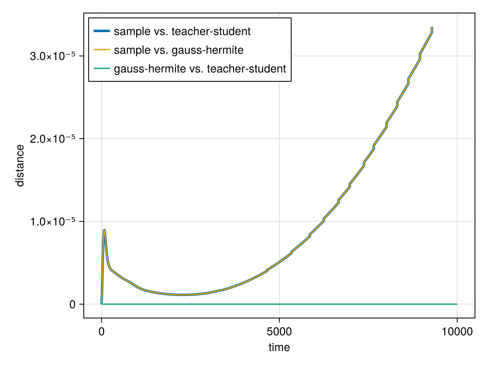

There are two settings in which we can approximate gradient descent on the loss function integrated over an infinite amount of normally distributed input data, i.e. $\mathbb E_x\left[(\mathrm{net}(p, x) - y)^2\right]$ with normally distributed $x$ with mean 0 and standard deviation 1:
- When the input dimension is sufficiently small (
Din ≤ 2) such that we can use Gauss-Hermite quadrature. This works for arbitrary teacher functions and networks. - When we have a single hidden layer teacher and student network. This is particularly fast, when using
erf-based activation functions, likenormal_cdforsigmoid2(see Activation Functions).
We illustrate both cases in a 2D example.
using MLPGradientFlow, Statistics, Random
Random.seed!(12)
input = randn(2, 5_000)
teacher = TeacherNet(; layers = ((5, sigmoid2, true), (1, identity, false)), input)
student = Net(; layers = ((4, sigmoid2, true), (1, identity, false)),
input, target = teacher(input))
p = random_params(student)
sample_losses = [let input = randn(2, 5_000), target = teacher(input)
loss(student, p; input, target)
end
for _ in 1:10]
(mean(sample_losses), std(sample_losses))(0.26856656530967143, 0.005698864188753345)net_gh = gauss_hermite_net(teacher, student)
loss(net_gh, p)0.26847844583354985neti = NetI(teacher, student)
loss(neti, p)0.2684784458335493Let us compare training trajectories of the different networks. The timescales tauinv need to be adjusted for the dynamics based on the student or the Gauss-Hermite net_gh, such that the integration times match.
res_sample = train(student, p, tauinv = 1/MLPGradientFlow.n_samples(student),
maxT = 10^4, maxiterations_optim = 0, n_samples_trajectory = 1000)Dict{String, Any} with 19 entries:
"gnorm" => 3.30147e-6
"init" => Dict("w1"=>[0.230235 -0.239929 0.0; -0.0932419 0.13650…
"x" => Dict("w1"=>[0.311832 -0.423128 0.000281602; 0.00874656…
"loss_curve" => [0.275265, 0.264464, 0.254011, 0.243898, 0.234116, 0.2…
"target" => [-0.471534 -0.105194 … -0.26362 -0.245499]
"optim_iterations" => 0
"ode_stopped_by" => ""
"ode_iterations" => 72
"optim_time_run" => 0
"converged" => false
"ode_time_run" => 0.289541
"loss" => 2.09956e-6
"input" => [0.917897 1.00922 … -0.417516 -2.29178; -1.90071 -0.31…
"trajectory" => OrderedDict(0.0=>Dict("w1"=>[0.230235 -0.239929 0.0; -…
"ode_x" => Dict("w1"=>[0.311832 -0.423128 0.000281602; 0.00874656…
"total_time" => 22.1576
"ode_loss" => 2.09956e-6
"layerspec" => ((4, "sigmoid2", true), (1, "identity", false))
"gnorm_regularized" => 0.0165073res_gh = train(net_gh, p, tauinv = 1/MLPGradientFlow.n_samples(net_gh), maxT = 10^4,
maxiterations_optim = 0, n_samples_trajectory = 1000)Dict{String, Any} with 20 entries:
"gnorm" => 3.80456e-6
"init" => Dict("w1"=>[0.230235 -0.239929 0.0; -0.0932419 0.13650…
"weights" => [1.47074e-14, 1.73348e-14, 2.00981e-14, 2.2922e-14, 2.…
"x" => Dict("w1"=>[0.307694 -0.446489 -1.32774e-17; 0.0180284…
"loss_curve" => [0.268478, 0.258204, 0.248249, 0.238607, 0.229271, 0.2…
"target" => [-0.752605 -0.752873 … 0.752873 0.752605]
"optim_iterations" => 0
"ode_stopped_by" => ""
"ode_iterations" => 71
"optim_time_run" => 0
"converged" => false
"ode_time_run" => 0.818333
"loss" => 1.87845e-6
"input" => [-1.34629 -1.21804 … 1.21804 1.34629; -8.30898 -8.3089…
"trajectory" => OrderedDict(0.0=>Dict("w1"=>[0.230235 -0.239929 0.0; -…
"ode_x" => Dict("w1"=>[0.307694 -0.446489 -1.32774e-17; 0.0180284…
"total_time" => 12.1758
"ode_loss" => 1.87845e-6
"layerspec" => ((4, "sigmoid2", true), (1, "identity", false))
"gnorm_regularized" => 0.0511637resi = train(neti, p, maxT = 10^4,
maxiterations_optim = 0, n_samples_trajectory = 1000)Dict{String, Any} with 17 entries:
"gnorm" => 3.80456e-6
"init" => Dict("w1"=>[0.230235 -0.239929 0.0; -0.0932419 0.13650…
"x" => Dict("w1"=>[0.307694 -0.446489 -2.21731e-14; 0.0180284…
"loss_curve" => [0.268478, 0.258204, 0.248249, 0.238607, 0.229271, 0.2…
"optim_iterations" => 0
"ode_stopped_by" => ""
"ode_iterations" => 71
"optim_time_run" => 0
"converged" => false
"ode_time_run" => 0.057112
"loss" => 1.87845e-6
"trajectory" => OrderedDict(0.0=>Dict("w1"=>[0.230235 -0.239929 0.0; -…
"ode_x" => Dict("w1"=>[0.307694 -0.446489 -2.21731e-14; 0.0180284…
"total_time" => 7.58215
"ode_loss" => 1.87845e-6
"layerspec" => ((4, "sigmoid2", true), (1, "identity", false))
"gnorm_regularized" => 3.80456e-6td1, tt1, _ = MLPGradientFlow.trajectory_distance(res_sample, resi)
td2, tt2, _ = MLPGradientFlow.trajectory_distance(res_gh, resi)
td3, tt3, _ = MLPGradientFlow.trajectory_distance(res_sample, res_gh)
using CairoMakie
f = Figure()
ax = Axis(f[1, 1], ylabel = "distance", yscale = Makie.pseudolog10, xlabel = "time")
lines!(ax, tt1, td1, label = "sample vs. teacher-student", linewidth = 3)
lines!(ax, tt3, td3, label = "sample vs. gauss-hermite")
lines!(ax, tt2, td2, label = "gauss-hermite vs. teacher-student")
axislegend(ax, position = :lt)
f┌ Warning: reached end of reference
└ @ MLPGradientFlow ~/work/MLPGradientFlow.jl/MLPGradientFlow.jl/src/utils.jl:31
The Gauss-Hermite approximation and the teacher-student network based on symbolic integration of Gaussian integrals give almost indistinguishable results, whereas gradient flow on a finite number of normally distributed samples leads to slight deviations from the infinite data setting.